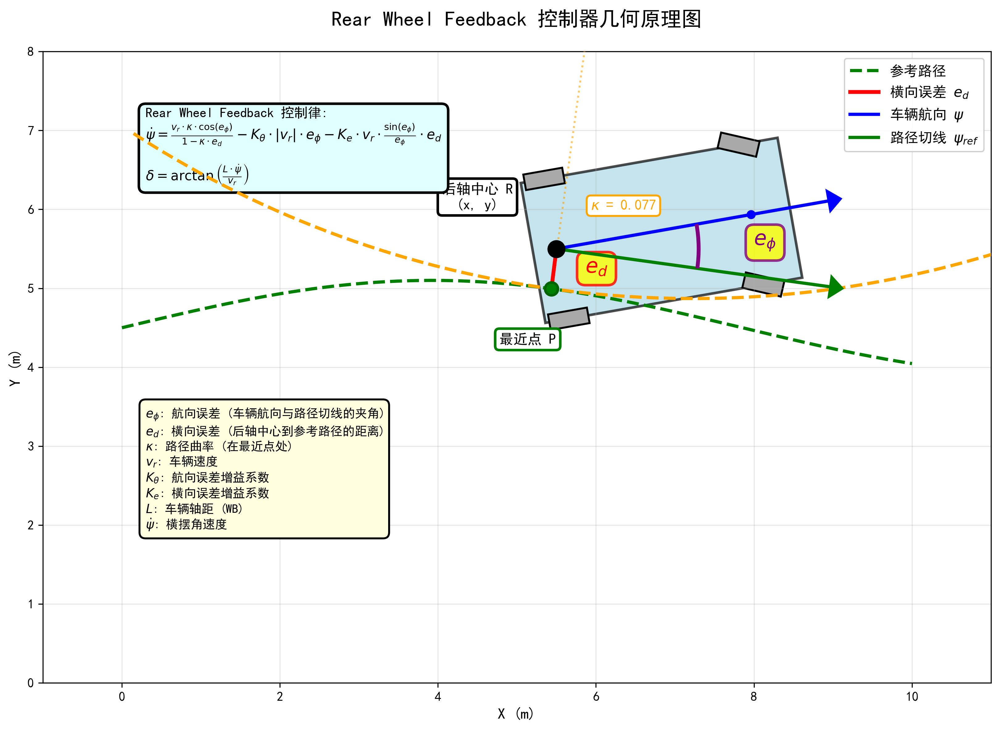

Rear Wheel Feedback 控制器
算法简介
后轮反馈控制器（Rear Wheel Feedback Controller）是一种基于车辆后轴位置进行路径跟踪的控制算法。该算法通过后轴中心的横向误差、航向误差以及路径曲率进行反馈控制，特别适用于低速场景如泊车和狭窄空间导航1 2。
控制原理
核心思想
后轮反馈控制器通过三个反馈项来计算车辆的横摆角速度：
- 曲率前馈项：根据参考路径的曲率进行前馈控制
- 航向误差反馈项：消除车辆航向与路径切线方向的偏差
- 横向误差反馈项：消除车辆后轴中心到参考路径的横向距离
几何原理图

如图所示，后轮反馈控制器的关键要素包括：
- 后轴中心 R：控制参考点
- 横向误差 \(e_d\)：后轴中心到参考路径最近点 P 的距离
- 航向误差 \(e_\phi\)：车辆航向 \(\psi\) 与路径切线 \(\psi_{ref}\) 的夹角
- 路径曲率 \(\kappa\)：参考路径在最近点处的曲率，用于前馈控制
控制律
后轮反馈控制器的横摆角速度计算公式为：
\[
\dot{\psi} = \frac{v_r \cdot \kappa \cdot \cos(e_\phi)}{1 - \kappa \cdot e_d} - K_\theta \cdot |v_r| \cdot e_\phi - K_e \cdot v_r \cdot \frac{\sin(e_\phi)}{e_\phi} \cdot e_d
\]
然后通过横摆角速度计算前轮转向角：
\[
\delta = \arctan\left(\frac{L \cdot \dot{\psi}}{v_r}\right)
\]
其中：
- \(\dot{\psi}\) : 横摆角速度
- \(v_r\) : 车辆速度
- \(\kappa\) : 参考路径在最近点的曲率
- \(e_\phi\) : 航向误差
- \(e_d\) : 横向误差
- \(K_\theta\) : 航向误差增益系数
- \(K_e\) : 横向误差增益系数
- \(L\) : 车辆轴距 (WB)
代码实现
核心代码
完整的 ComputeControlCommand 方法实现：
def ComputeControlCommand(self, node: Node, reference: PATH) -> ControlCommand:
ref_path = reference
# 1. 找到参考路径上最近点
target_ind = ref_path.calc_nearest_ind(node)
# 2. 计算横向误差和航向误差
ed, e_phi = ref_path.cal_ed_e_phi(node, target_ind)
# 3. 处理航向误差为零的情况，避免除零
if abs(e_phi) < 1e-6:
e_phi = 1e-6 if e_phi >= 0 else -1e-6
# 4. 获取参考路径曲率
k = ref_path.ccurv[target_ind]
vr = node.v
# 5. 后轮反馈控制律
yaw_rate = (
vr * k * math.cos(e_phi) / (1.0 - k * ed)
- self.config.rear_wheel_feedback.K_theta * abs(vr) * e_phi
- self.config.rear_wheel_feedback.K_e * vr * math.sin(e_phi) * ed / e_phi
)
# 6. 计算前轮转向角
delta = math.atan(self.config.WB * yaw_rate / vr)
# 7. 限制转向角范围
delta = self.ClampSteeringAngle(delta)
return ControlCommand(
steer=delta,
target_ind=target_ind,
lat_error=ed,
yaw_error=e_phi,
)
实现细节
1. 误差计算
基于后轴中心计算横向误差和航向误差：
# 1. 找到参考路径上最近点
target_ind = ref_path.calc_nearest_ind(node)
# 2. 计算横向误差和航向误差
ed, e_phi = ref_path.cal_ed_e_phi(node, target_ind)
2. 除零保护
当航向误差接近零时，控制律中的 \(\sin(e_\phi)/e_\phi\) 项会产生数值问题：
3. 控制律计算
结合曲率前馈和误差反馈计算转向角：
# 5. 后轮反馈控制律
yaw_rate = (
vr * k * math.cos(e_phi) / (1.0 - k * ed)
- self.config.rear_wheel_feedback.K_theta * abs(vr) * e_phi
- self.config.rear_wheel_feedback.K_e * vr * math.sin(e_phi) * ed / e_phi
)
# 6. 计算前轮转向角
delta = math.atan(self.config.WB * yaw_rate / vr)
参数配置
配置类定义
参数说明
| 参数 | 说明 | 影响 |
|---|---|---|
K_theta |
航向误差增益系数 | 越大航向收敛越快 |
K_e |
横向误差增益系数 | 越大横向收敛越快 |
优缺点分析
优点
- 曲率前馈：利用路径曲率信息，减小弯道处的跟踪误差
- 低速稳定：特别适合低速场景，如泊车和窄窄空间
缺点
- 需要曲率信息：依赖路径曲率，需要预先计算
使用示例
基本用法
from pyauto.config.config import Config
from pyauto.control.Rear_Wheel_Feedback import RearWheelFeedbackController
from pyauto.control.pid_speed_control import PIDSpeedController
# 1. 创建配置
config = Config()
config.rear_wheel_feedback.K_theta = 1.0
config.rear_wheel_feedback.K_e = 0.5
# 2. 创建控制器
lat_controller = RearWheelFeedbackController(config)
lon_controller = PIDSpeedController(config)
# 3. 在控制循环中使用
for step in range(max_steps):
cmd = lat_controller.ComputeControlCommand(current_node, reference_path)
steering = cmd.steer
vehicle.update(acceleration, steering)
使用工厂模式创建
from pyauto.control.controller_factory import ControllerFactory
from pyauto.config.config import Config
config = Config()
config.rear_wheel_feedback.K_theta = 1.0
config.rear_wheel_feedback.K_e = 0.5
# 通过工厂创建控制器
controller = ControllerFactory.create("rear_wheel_feedback", config)
常见问题
Q1: 为什么需要处理航向误差为零的情况？
答：控制律中包含 \(\sin(e_\phi)/e_\phi\) 项，当 \(e_\phi \to 0\) 时，该项趋近于 1（洛必达法则），但直接计算会产生除零错误。通过设置最小阈值避免此问题。
Q2: K_theta 和 K_e 如何调节？
答：
- K_theta 过大：航向收敛快但可能震荡
- K_theta 过小：航向收敛慢，弯道跟踪差
- K_e 过大：横向误差消除快但可能过冲
- K_e 过小：横向误差消除慢
建议从默认值开始，根据实际表现进行微调。
Q3: 后轮反馈与 Pure Pursuit 有什么区别？
答：
| 特性 | 后轮反馈 | Pure Pursuit |
|---|---|---|
| 参考点 | 后轴中心最近点 | 前视点 |
| 曲率信息 | 需要 | 不需要 |
| 参数 | K_theta, K_e | Ld, kf |
仿真演示
下图展示了 RearWheelFeedback控制器的实际运行效果：

参考文献
-
Henry. 控制算法-后轮位置反馈[EB/OL]//Henry-Z. https://zgh551.github.io/2020/02/26/控制算法-后轮位置反馈/. ↩
-
未定义～. 【路径跟踪】后轮误差反馈跟踪算法个人总结|python|c++|webots[EB/OL]//CSDN. https://blog.csdn.net/weixin\_44519259/article/details/132795816. ↩